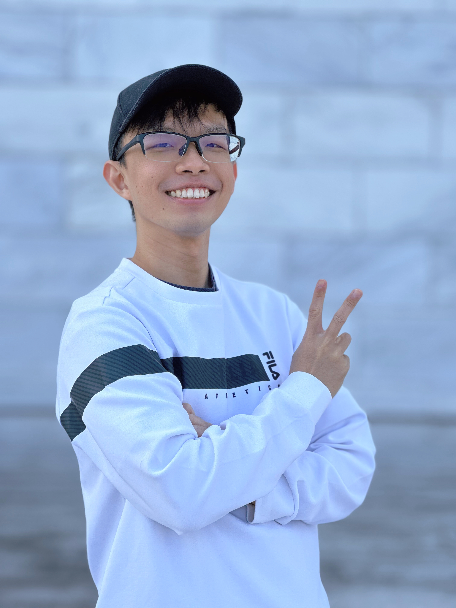

Dr. Malcolm Ho

Education:
2026 — Ph.D. in Neuroscience, Interdisciplinary Graduate Programme in Neuroscience, Nanyang Technological University.
2020 — B.Sc. in Biological Sciences with a Second Major in Psychology, Nanyang Technological University.
Position: Postdoctoral Research Fellow
Research Interest: Bi-directional modulation of brain and body, Cognitive and Systems Neuroscience, Circuit biology.
Dr. Malcolm is currently a postdoctoral research fellow focusing on how nutritional factors affect sleep, by deploying a suite of methods including EEG/EMG and fiber photometry.